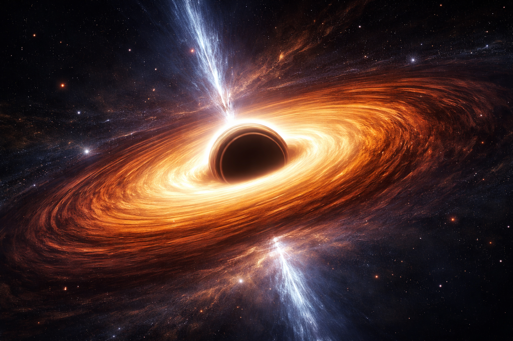
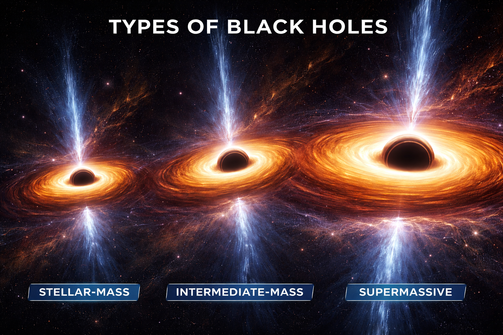

Black holes are among the most extreme objects in the universe.
Their existence was first predicted through the equations of general relativity by Albert Einstein in 1915. Later, physicist Karl Schwarzschild found a solution describing a region where gravity could become infinitely strong.
Today, black holes are widely accepted as real astrophysical objects supported by observational evidence.

Most black holes form from the death of massive stars.
When a star at least 20 times the mass of the Sun exhausts its nuclear fuel, it can no longer support itself against gravity.
The outer layers explode in a supernova, while the core collapses inward.
If the remaining core is massive enough, gravity compresses it beyond the neutron star stage, forming a stellar-mass black hole.
Supermassive black holes, millions to billions of times more massive than the Sun, are found at the centers of galaxies such as the Milky Way. The black hole at our galaxy’s center is called Sagittarius A*.
A black hole consists of three main regions:
Black Holes are mainly of three types:

Black holes cannot be observed directly because they emit no light.
Instead, astronomers detect them by observing their effects on surrounding matter.
Black holes are a prediction of general relativity, which describes gravity as the curvature of spacetime. Near a black hole:
Black holes influence galaxy formation and evolution.
Supermassive black holes regulate star formation through energetic jets and radiation.
Their growth appears connected to the growth of galaxies themselves.
Modern research also explores Hawking radiation, a theoretical process proposed by Stephen Hawking, suggesting black holes may slowly evaporate over extremely long timescales.
Black holes influence galaxy formation and evolution.
Supermassive black holes regulate star formation through energetic jets and radiation.
Their growth appears connected to the growth of galaxies themselves.
Black holes are not merely exotic objects but fundamental components of cosmic structure.
They test the limits of general relativity, influence galaxy evolution, and challenge our understanding of physics at extreme conditions.
Ongoing research continues to reveal their properties and deepen our understanding of the universe.